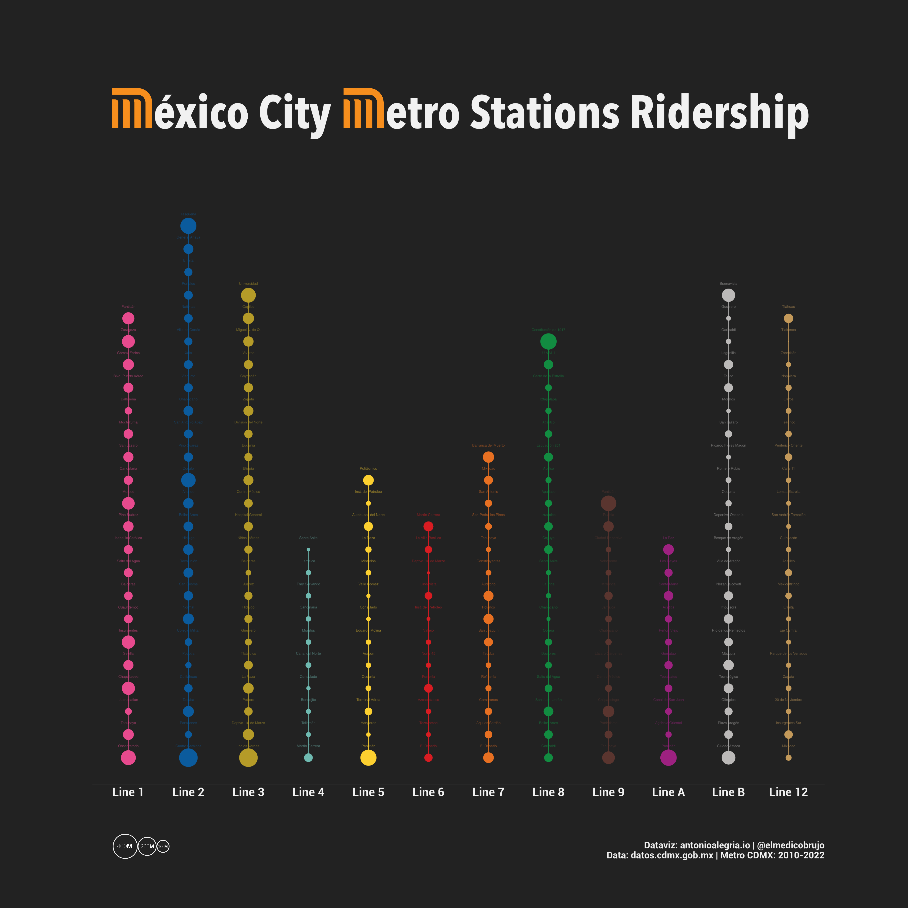

The Mexico City subway is not only one of the busiest metro systems in the world, but also a vibrant cultural hub that showcases colorful murals, live music performances, and a diverse array of street art.
Despite Mexico City’s stark socioeconomic disparities, the subway serves as an equalizer, transporting over 1.6 billion passengers annually across the city, from the most affluent neighborhoods to the poorest areas.
To capture the full scope of twelve years’ worth of ridership data in a single plot, follow these simple steps and unleash the power of {ggplot2}